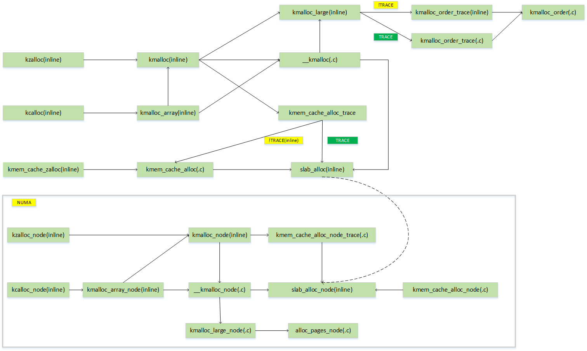
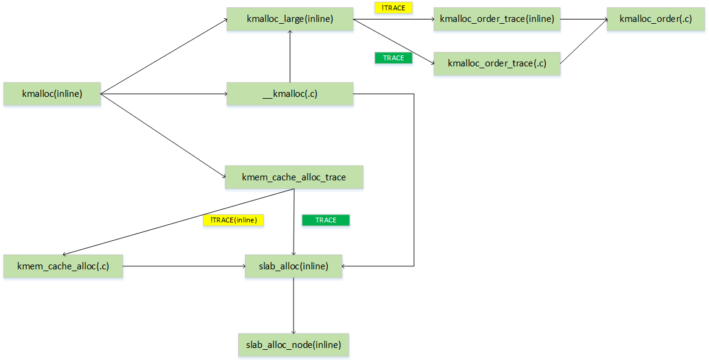
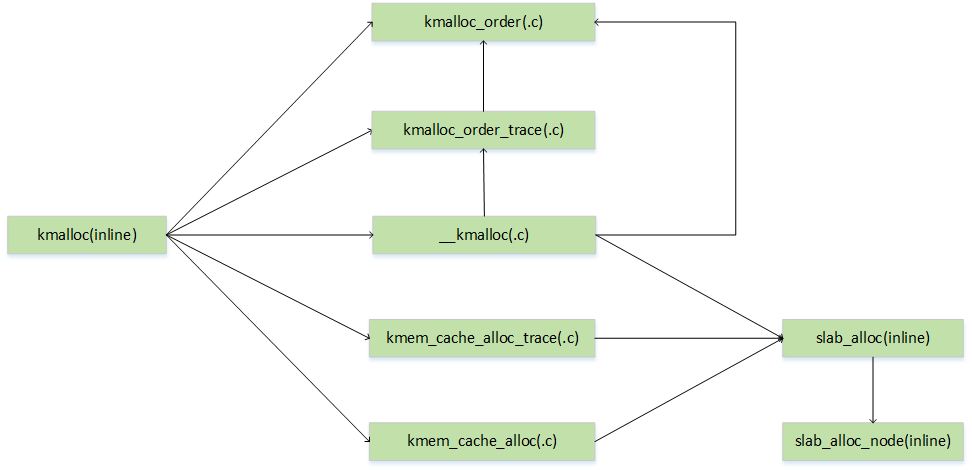
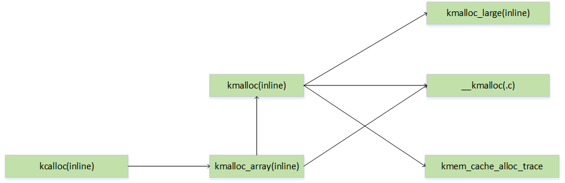
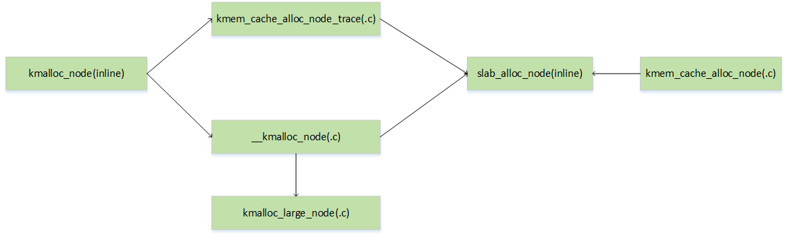
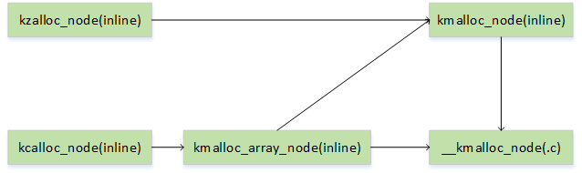
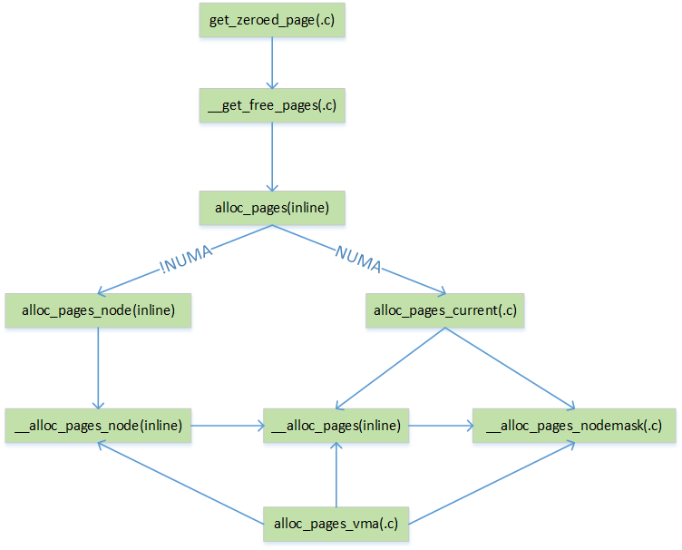
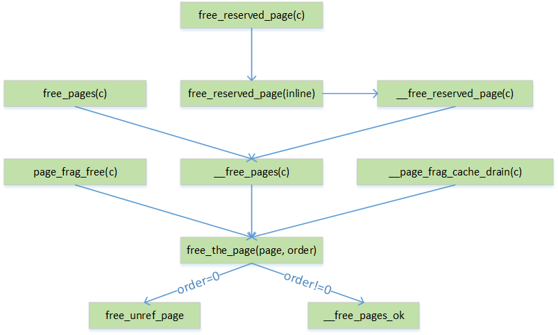
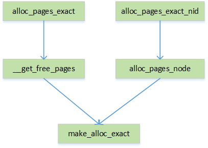
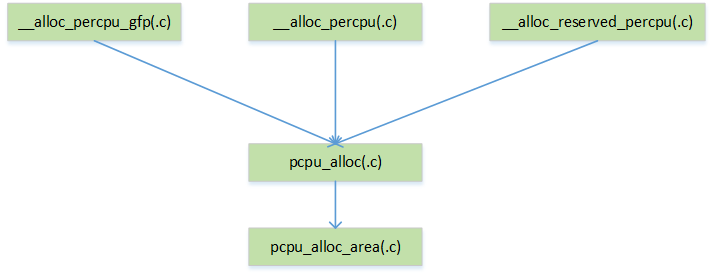

项目名称
统计一个内核模块占用的内存
项目描述：
本项目需要统计openEuler系统中内核模块所使用的内存，统计主体为系统启动后加载的一系列模块，例如ext4。具体的模块列表信息可以通过cat /proc/modules列出。
内核内存有两种分配方式，即slab和buddy。buddy分配系统以页为粒度进行内存分配，但是对于小内存分配场景下以页为单位进行内存分配就不太合适，如频繁的使用内核里面的某种结构体，以页为粒度就会产生很多内存碎片。为了提高这种小内存分配场景下的内存使用效率，Linux内核引入了slab分配器。对于常用的一些结构体使用slab进行缓存，当内核或者内核模块的某一部分需要使用一个结构体，即从slab缓存中取出一个预先初始化好的结构体，这样不仅提升了内存利用率，也削减了重复对一个结构体进行初始化的开销。slab的内存也是来自于buddy，当slab中的内存不够分配时就会向buddy申请页。
方案描述
内核模块在加载后会在/sys/module下创建一个目录，通过目录下面的文件可以访问内核模块的相关信息。本项目的最终结果展示为在/sys/module下面为每个内核模块创建一个文件，使用cat访问文件即可输出相关内存分配的统计信息。
内核内存统计功能通过在内存分配函数当中添加相关记录代码，汇总到模块的结构体当中存储，统计的内存为slab、buddy、percpu。
时间规划
7.1-7.15:
文档代码和阅读阶段，在这个阶段阅读了mm模块的相关代码以及相关博客，重点学习了slab分配器的相关源代码文件linux/slab.h、mm/slab.h、slab_common.c以及slub.c，对于相关函数调用整理出调用图。
7.15-7.31:
配置初始开发环境，初始开发环境为ubuntu宿主机，qemu虚拟机，使用aarch64下的defconfig进行交叉编译。考虑到需要频繁的测试修改后的内核，一次改动需要重新编译的内核文件较多，使用defconfig文件进行编译，然后使用qemu进行模拟启动这样可以将一次重新编译和启动的时间缩短到几分钟以内，便于测试代码。
8.1-8.15:
初步完成slab统计功能，完成中期项目考核。
8.15-8.31:
等待中期考核结果，解决项目当中遇到的一些问题。
9.1-9.15:
完成buddy系统、percpu的内存统计功能。
9.1-9.15:
整理代码，准备结项。
项目总结
项目产出
/sys/module目录下创建可供用户态访问统计内存结果的接口
已完成。
项目成果描述见后面章节R1：/sys/module目录下创建usedmemory文件夹。
项目代码成果为
0001-add-usedmemory-to-sysfs.patch完成slab内存统计
已完成。
项目成果描述见后面章节R2：slab分析。
项目代码成果为
0002-slab.patch完成buddy内存统计
已完成。
项目成果描述见后面章节R3：buddy分析。
项目代码成果为
0003-buddy.patch完成percpu内存统计
已完成。
项目成果描述见后面章节R4：percpu分析。
项目代码成果为
0004-percpu.patch完成mempool内存统计
已完成。
项目成果描述见后面章节R5：mempool分析。
项目代码成果为
0006-mempool.patchslab当中添加krealloc以及kmem_cache_alloc_bulk，buddy中添加split_page
已完成。
主要针对slab以及buddy当中额外增加的函数。
项目代码成果为
0006-mempool.patch
方案进度
7.15-7.31:
- 针对内存分配的统计框架设计完成，并且初步完成kmalloc分配内存的统计
- 熟悉了内核module的加载过程，理解了以及其在sysfs下创建相关文件进行读写的逻辑
- 在每个模块的module_kobject中创建了用于保存内存分配信息的结构体成员
- 在动态加载的每个模块下面创建了usedmemory文件，用于展示输出
8.1-8.15：
- 完成slab分配器其余内存分配函数的统计功能（针对slub.c、slub_common.c以及slab.h）
- 完成了mm模块下内存池（mempool.h、mempool.c）相关函数统计功能
- 移植到open Euler系统上进行测试
- 完成块设备IO子系统下的相关函数的统计测试功能
8.15-8.30：
- free调用次数比alloc多的问题已经解决，dm_mod释放了内核代码fs当中申请的内存，即模块可能会释放不属于自己申请的内存
- 多free的情况表明不能直接将每次free操作直接统计为内核模块的释放操作，需要加一段代码来记录每次alloc的地址，当free的指针不是已经记录过的地址则直接pass，该部分功能已经完成。完成后无负数的情况出现
9.1-9.15：
- 完成buddy系统统计功能
- 完成percpu系统统计功能
- 阅读mm模块当中其他具有内存分配功能的函数
9.15-9.30：
- 优化已完成的功能的代码，去除冗余代码
- 添加dmapool统计
- 添加slub、buddy当中的未考虑到的函数
- 使用测试模块测试已完成统计的相关函数
- 完成patch制作
- 完成结项报告
遇到的问题及解决方案
P1：需要确定内存分配是来自于内核代码自身还是来自于内核模块
总体解决思路
通过获取每一次调用内存分配函数的调用者地址来区分该次调用是属于模块还是内核自身，Linux内核维护了一个模块链表modules，除了直接编译进内核的模块，后续加载的所有模块都会通过这个modules连接起来。每一个通过load_module加载到内核的模块内核都会为其创建一个唯一的struct module结构体，这个结构体内部存放了该模块的位置信息，包括代码段所在的位置。如果能够获取每一次内存分配函数的调用者地址，判断其是否在一个模块的.text节内，即可判断该次调用是属于内核自身还是某一个内核模块。
（1）获取调用者地址
gcc内建函数中实现了__builtin_return_address(level)，其中level有0~3四种取值，取值0代表当前运行函数返回地址，取值1代表当前运行函数调用者的返回地址。Linux当中提供了一个宏可以直接使用
1 | // linux/kernel.h |
对于定义为inline的函数，其代码会被展开到调用者的代码中，相应的”返回地址”应该为当前代码的地址，可以定义一个get_pc函数获取当前的代码地址
1 | static __attribute__ ((__noinline__)) void* get_pc(void) |
对于内核模块直接调用的内存分配函数，使用上述两种方式即可以完成调用地址的判定（内核自身or内核模块）。但是Linux内核中还存在函数的间接调用关系，这种情况表现为内核模块自身并没有直接使用slab中的内存分配函数（kmalloc、kmem_cache_alloc等），对应的场景之一为内核模块使用内存池进行内存分配。
以内存池为例，如果仅仅通过kmalloc函数或者kmem_cache_alloc进行一层调用地址的判定是无法准确得出该次调用是来自哪里的，因为此时调用的内存分配函数为mempool_alloc，mempool_alloc最终又调用了pool->alloc来完成实际的内存分配，而pool->alloc大概率就是kmem_cache_alloc或者kmalloc。这样使用_RET_IP_或者get_pc获取到的地址都是mempool_alloc，而这个函数的地址是属于内核的，这样就会出现误判。
实际测试发现无法在内核中使用非0参数的__builtin_return_address，非0参数调用会导致无法启动（后续会排查原因），也就是最多只能获取一层调用地址，因此解决办法为hook每一个可能被内核模块调用的函数。
（2）根据调用者地址判断属于哪个模块
通过load_module加载的内核模块在内核当中的位置是不确定的，但是一旦内核模块被加载到内核中其位置就是一个固定值。具体的来说load_module函数会调用layout_and_allocate函数为加载的内核模块分配内存，并且填充struct module结构体当中的core_layout以及init_layout
1 | struct module { |
module_layout是一个描述模块位置信息的结构体，其中base为基地址，text_size描述了.text节的大小
1 | struct module_layout { |
对于来自于内核模块的内存分配，其调用地址一定在该模块的.text节内，因此只需要获取调用内存分配函数的调用者地址，与内核模块链表当中记录的模块地址去比对即可获取该调用地址属于哪个模块。
内核当中的module.c中实现了对应功能的函数：__module_text_address，传入一个地址判断该地址是否在任一模块的.text节内，是则返回对应的模块，否则返回NULL。使用EXPORT_SYMBOL将__module_text_address符号导出即可使用。
P2：内核的内存分配函数存在一级调用一级的关系，需要避免重复统计
解决方案是仅在非inline函数中进行统计，inline函数不统计。
inline函数最终一定是展开到一个非inline函数，因此只需要在非inline函数中调用_RET_IP进行一次统计即可。
特例：kmalloc_large这个函数使用了get_pc()进行判断并且进行统计。kmalloc_large的调用者来自于kmalloc（inline函数）或者__kmalloc（非inline函数），二者需要分别统计。
P3：部分模块的usedmemory显示为非常大（unsigned值向下溢出了）
一开始的方案是如果一个内核模块申请了一块内存，就在相对应的一个size_t used变量加上这块内存的大小，如果释放了就减去释放内存的大小。
出现这个问题的原因是因为内核模块会释放不属于自己申请的内存。相对应的典型模块是dm_mod，其中的endio函数会释放block模块申请的bio结构体。
解决方案是添加一项数据结构，存储每次统计申请的内存的指针，如果释放了不在存储当中的内存指针，那么就不进行减操作。相关代码在0002-slab.patch中实现。
项目完成质量
项目开发初期的方案考虑不是很成熟，对应产生的patch在old-patch/0001-9-15.patch，虽然完成了功能需求，但是引入了很多冗余的代码。同时相同的函数因为config的不同产生了两个副本，代码质量不佳，patch当中的新增加的代码行数超过4000行。
在导师的意见下，后续针对代码进行了重新优化，针对冗余代码进行删除，在保持功能不变的情况下极大的减少了代码行数。将一个patch划分成了多个功能不同的patch解决了patch过大，实现的功能过多不适合阅读的问题。改动后的patch分为6个：
0001-add-usedmemory-to-sysfs.patch：完成sys目录下每个模块usedmemory的创建，在struct module及module_kobject当中添加了相应的数据结构，新增代码行数为163行。
0002-slab.patch：完成slab统计的功能，因为需要添加相应的统计函数及记录结构体，新增加了两个文件statis_memory.c以及statis_memory.h，新增代码行数为253行。
0003-buddy.patch：完成buddy系统的统计功能，新增代码行数为71行。
0004-percpu.patch：完成percpu系统的统计功能，新增代码行数为43行。
0005-add-split_page-krealloc.patch：增加slab和buddy系统当中的几个额外函数，新增代码为51行
0006-mempool.patch：完成mempool的统计功能，新增代码行数为37行。
与导师沟通及反馈情况
在完成项目的过程中遇到了一些困难，均与导师进行了沟通并且得到了相应的修改意见。
R1：/sys/module目录下创建usedmemory文件夹
在sysfs下为每一个模块创建一个文件，通过cat文件即可看到内存使用情况。内核模块有直接编译进内核的部分和动态加载进内核两种方式：
第一种情况内核模块直接编译进内核，这种情况下内核模块和内核自身的代码已经编译链接到一起了，通过lsmod以及/proc/modules已经无法列出这类模块，但是在sys/modules下面仍然存在着相关模块的文件夹。
第二种情况是通过lsmod和/proc/modules能查看到的模块，也就是非builtin模块。这类模块在加载时通过load_module完成，目前项目针对的模块是通过load_module加载的模块。
具体过程如下
动态加载进入内核的模块会在sys/module下面创建一个和模块名相同的文件夹，这个过程是在load_module中完成的。load_module函数首先会为每一个模块创建一个struct module的结构体，这个结构体当中就保存了这个模块的所有信息，load_module函数会填充这个结构体的内容然后将这个struct module指针插入到全局的模块链表中去。
struct module结构体当中保存了该模块的module_kobject，module_kobject描述了该模块在sysfs下展示的信息。为了统计模块占用的内存，在module_kobject当中加入了used_memory以及used_pages记录模块分配的内存信息（used_memory应当定义为size_t，但是当前版本的代码还存在一些bug，使用int来进行调试）
1 |
|
load_module通过mod_sysfs_setup函数完成该模块在sysfs下需要展示的文件和文件夹。为了显示当前内核模块所占用的内存，需要在/sys/module下面创建一个usedmemory文件，该文件的描述符如下
1 | struct module_usedmemory_attribute { |
在load_module当中通过sysfs_create_file创建usedmemory文件
1 | static int load_module(struct load_info *info, const char __user *uargs, |
文件创建好后需要控制该文件的读操作，uattr->mattr.show = __module_usedmemory_show指定了读取该文件时调用的函数，在params.c中定义函数代码如下：
1 | ssize_t __module_usedmemory_show(struct module_attribute * mattr, |
这样通过cat即可输出模块的占用内存信息
R2：slab分析
slab系统函数调用流程图如下：

上图当中所描述的函数即是我们需要统计的函数。下面分别对相关函数及统计思路进行分析
- kzalloc和kmalloc函数
kzalloc和kmalloc都是slab.h当中声明的内联函数，kzalloc是kmalloc的一层封装。由于其都是内联函数，在编译后的文件当中不存在实际的函数体，实际的内存分配工作都是由c文件当中的函数来完成。以kmalloc函数为例，其调用函数关系如下：

通过函数调用关系图可以发现虽然kmalloc函数可能会有很多条函数调用路径，但是最终内存分配的工作就是由slab_alloc_node或者kmalloc_order函数来完成，前者完成slab可以处理的内存分配，后者直接分配buddy的内存页。
之前考虑的简单方法，对于每一个涉及到的函数都进行一层caller_address的参数传递，inline函数使用get_pc()来获取调用地址，非inline函数使用_RET_IP_来获取返回地址。这种方法简单，但是需要改动的函数较多，每一个内存分配函数需要提供一个接口转换的新函数，改动量大并且冗余代码偏多，不利于参与实际的内核开发。
一种改进的方法是不考虑inline函数，只考虑在.c文件当中的函数，因为inline函数在编译时会展开到实际的调用地点，最终的工作还是由具有函数体的函数来完成。因此对于调用图当中的inline函数节点可以与前一个节点进行收缩，只考虑最终调用的函数，对kmalloc函数进行收缩后的图如下：

上图表明kmalloc函数可以通过一系列inline函数到达五种具有实际函数体的函数，最上面两个函数和buddy系统交互（后面分析），下面的三个函数是slab的内存分配函数，这三个最终都会调用slab_alloc，而slab_alloc又会调用slab_alloc_node，这两个函数都是inline函数，因此在slab_alloc_node加上一层统计即可完成当前路线当中所有函数（kmalloc、__kmalloc、kmem_cache_alloc_trace、kmem_cache_alloc）的统计功能。
由于kzalloc是kmalloc的一层简单内联封装，kmem_cache_zalloc是kmem_cache_alloc的简单内联封装，因此统计也适用于kzalloc和kmem_cache_zalloc。
- kcalloc和kmalloc_array函数

由调用关系图可知，kcalloc和kmalloc_array本身是内联函数，并且可以通过内联的方式到达kmalloc或者__kmalloc函数，因此kcalloc和kmalloc_array可以视为是一种kmalloc或__kmalloc的调用。其统计也可以通过slab_alloc_node函数来实现。
- kmalloc_node和kmem_cache_alloc_node函数

kmalloc_node有两条路径，调用kmem_cache_alloc_node_trace或者__kmalloc_node，__kmalloc_node会选择从slab或者buddy分配内存，从slab分配的内存最终都会调用slab_alloc_node，因此这两个函数的统计可以通过slab_alloc_node函数来实现。
kzalloc_node、kcalloc_node、kmalloc_array_node这三个函数都是inline函数，都会展开成kmalloc_node或者__kamlloc_node，也就是从slab分配的内存也可以通过slab_alloc_node统计到。

总结：slab侧的内存分配可以通过slab_alloc_node函数统计到，无需对其他函数做改动。除slab_alloc和slab_alloc_node外其余函数到达slab_alloc_node的路径只会存在一个非inline的函数，这个非inline的函数可能不一样但是都会内联slab_alloc_node函数，因此在slab_alloc_node中加一个_RET_IP_即可获取最上层函数的实际调用地址。slab_alloc和slab_alloc_node并没有通过EXPORT_SYMBOL导出，也没有在.h文件中声明，是一个不能直接访问的函数。
slab直接分配页的情况
slab分配的内存有KMALLOC_MAX_CACHE_SIZE的限制，如果一次性分配的内存超过这个极限值就会直接从buddy中分配内存。与之相关的内存分配函数为非NUMA下的kmalloc_large以及NUMA下的kmalloc_large_node。kmalloc_large最终调用alloc_pages，kmalloc_large_node最终调用alloc_pages_node。slab侧的页分配直接在这两个函数内部统计。
kmalloc_large的声明放在slab.h，是一个内联函数，其返回值是页的虚拟地址。kmalloc_large可以被kmalloc直接调用或者__kmalloc调用，而kmalloc是内联函数__kmalloc不是，因此需要在__kmalloc和kmalloc_large两处记录。kmalloc_large被kmalloc调用时属于直接内联，使用get_pc()获取返回地址。kmalloc_large被__kmalloc调用时中间经过了一层c函数__kmalloc，kmalloc_large中使用get_pc()获取到的地址为__kmalloc的地址，不会被记录，需要在__kmalloc当中单独记录一次。
1 | static __always_inline void *kmalloc_large(size_t size, gfp_t flags) |
kmalloc_large_node的函数体在slub.c中，为非内联函数，kmalloc_large_node只被__kmalloc_node调用，因此记录放在__kmalloc_node中
1 | void *__kmalloc_node(size_t size, gfp_t flags, int node) |
slab内存释放
与slab相关的内存释放函数为kfree、kzfree、kmem_cache_free，都是非内联函数。这三个函数的区别在于kfree以及kzfree可能会释放slab的内存也可能会释放页，取决于传入的地址是否是一个合法的slab地址，而kmem_cache_free只会释放slab的内存。
kzfree会调用kfree，具体是释放slab还是页需要进行一次判断。
例如kzfree的修改如下，其余两个类似（kmem_cache_free不做页的判断）
1 | void kzfree(const void *p) |
其余函数
slab当中与内存分配相关的还有krealloc以及__krealloc，批量申请对象接口kmem_cache_alloc_bulk以及kmem_cache_free_bulk，下面分别对这几个函数进行描述：
- krealloc以及__krealloc
krealloc以及__krealloc是slab_common.c中提供的函数，两个函数的主要功能都是为一个对象重新分配大小。这两个函数的核心处理函数是__do_krealloc，__do_krealloc是一个内联函数，这个函数会判断对象p的内存大小ks和需要新分配的new_size，如果ks>new_size就直接返回p
1 | if (p) |
否则重新分配一块新的大小然后将p的内容拷贝到新分配的内存上
1 | ret = kmalloc_track_caller(new_size, flags); |
直接返回p的情况不需要做内存记录，重新分配内存时调用了kmalloc_track_caller，kmalloc_track_caller根据new_size的大小判断是从buddy还是slab重新分配内存，因此记录时使用new_size与KMALLOC_MAX_CACHE_SIZE进行比较，判断记录到页还是slab。
1 |
|
krealloc以及__krealloc的区别在于__krealloc不会释放掉原有的内存地址，而krealloc一旦重新分配就会free原有的地址。
- kmem_cache_alloc_bulk、kmem_cache_free_bulk
kmem_cache_alloc_bulk是批量申请slab内存的一个接口，kmem_cache_free_bulk是批量释放的接口，使用for循环来记录和释放所有申请的内存。
R3：buddy分析
主要分析了gfp.h，mm.h，page_alloc.c以及mempolicy.c。
常规页分配函数
选取了以下函数做统计。gfp.h当中的其余函数：alloc_hugepage_vma、alloc_page_vma、alloc_page_vma_node是alloc_pages_vma的特例，alloc_page是alloc_pages的特例，__get_free_page、__get_dma_pages是__get_free_pages的特例。

上面所有的函数最终会由__alloc_pages_nodemask来完成页分配，之前的考虑是对每一个上面的每一个函数添加了一层调用者返回地址caller_address，然后通过函数流传递到__alloc_pages_nodemask进行统一记录，原先的方法是在function_memhook函数中拷贝一份函数体，这样会导致冗余代码的出现，即一个函数因为config的不同写了两个类似的函数。
虽然上面所有函数的最终分配工作仍然是由一个函数（__alloc_pages_nodemask）来完成的，但是这里无法像slab那样对最终函数添加统计功能来完成所有函数的记录，slab当中的函数从上层调用到最终slab_alloc_node之间只存在一个非内联函数，而buddy系统中的函数可能存在多个非inline函数(例如从get_zeroed_page到__alloc_pages_nodemask)，多个非inline的函数会导致从__alloc_pages_nodemask获取到的__RET_IP_为内核自身的函数地址。
改进的方法类似slab的处理，对于inline函数不做处理，在每个非inline函数中添加一层记录。例如对于alloc_pages函数，非NUMA下其会通过一系列inline函数展开到__alloc_pages_nodemask，__alloc_pages_nodemask内的_RET_IP_会定位到调用者地址，NUMA情况下alloc_pages_current函数会记录返回地址，之后再次调用__alloc_pages_nodemask，由于其返回地址为alloc_pages_current的地址是内核地址所以不会出现重复记录的问题。
对于返回为unsigned long的函数使用
record_to_sysfs_page((unsigned long)_RET_IP_, virt_to_page((void *)addr), 1<<order);
返回为page的使用
record_to_sysfs_page((unsigned long)_RET_IP_, page, 1<<order);
buddy内存释放函数：
针对页的释放函数较多，有的参数为页的虚拟地址，有的参数为struct page*，但是二者之间可以相互转换。主要函数有下图的上面几个（free_the_page及之后就是内部实现代码，不可以直接调用）。

inline函数的统计会在c函数当中完成，因此不考虑。free_pages的参数为页的虚拟地址以及页的order，free_pages会将页的虚拟地址转换为struct page*然后调用__free_pages。page_frag_free也是针对页的虚拟地址，首先使用virt_to_head_page()获取头部的页，然后使用compound_order()得到整个页面的order，然后测试页面的引用计数，如果为0则调用free_the_page进行页面回收。__page_frag_cache_drain函数类似page_frag_free。
alloc_pages_exact、alloc_pages_exact_nid函数
上面分析的函数都是以2的次方的形式来分配页的，alloc_pages_exact和alloc_pages_exact_nid可以根据传入size的不同来精确确定所需要的分配的页数，一开始由__get_free_pages来粗粒度分配所需要的页，然后调用make_alloc_exact对多余的页进行释放。

alloc_pages_exact首先根据调用者传递的size，使用__get_free_pages进行一次粗粒度的分配，这个时候还是以2的次方形式进行分配。
1 | void *alloc_pages_exact(size_t size, gfp_t gfp_mask) |
粗粒度分配完成后调用make_alloc_exact进行一次细粒度分配，细粒度分配下使用alloc_end来标记__get_free_pages分配的地址上界，然后计算实际需要使用的used大小——addr + PAGE_ALIGN(size)可以确定以页为对齐的最小分配。split_page对页切割为一个个单个页面，然后释放掉used —— alloc_end之间多余的页。
1 | static void *make_alloc_exact(unsigned long addr, unsigned int order, |
alloc_pages_exact_nid的分配过程基本一致。
整个分配过程分为两步，先调用普通页分配函数进行粗粒度分配，然后再free不需要使用的页。make_alloc_exact函数会对页进行切割，切割后的页面每一个都需要单独释放，所以对每一页都需要记录，end是上界，virt_to_page计算出当前页struct page地址。
1 | void *alloc_pages_exact(size_t size, gfp_t gfp_mask) |
内存释放——free_pages_exact
alloc_pages_exact、alloc_pages_exact_nid对应的释放函数为free_pages_exact，free_pages_exact函数对每一个页进行释放，修改的函数如下：
1 | void free_pages_exact(void *virt, size_t size) |
其余相关函数
新增free_highmem_page
新增splite_page
splie_page将页切割成单个页，释放的时候每个页需要单独释放，调用一次splite_page需要将原来记录的大小为1<<order的记录删除，然后单独记录切割后的每个页
1 | void split_page(struct page *page, unsigned int order) |
R4：percpu分析
percpu部分主要分析了两个文件percpu.h与percpu.c
percpu内存分配
percpu中与内存分配的函数有：__alloc_percpu_gfp、__alloc_percpu、__alloc_reserved_percpu。另外的alloc_percpu_gfp与alloc_percpu是上面函数的简单包装。在c文件当中这几个函数的调用关系如下：

统计的对象为__alloc_percpu_gfp、__alloc_percpu、__alloc_reserved_percpu这三个函数，pcpu_alloc是完成内存分配的核心函数，并且只被上面的三个函数所调用。需要记录的是分配内存的地址以及分配的大小，pcpu_alloc的返回值即是分配的内存地址，pcpu_alloc_area中表明了分配的内存区域大小是以unit为单位，unit的数量为alloc_bits，而alloc_bits由需要分配的size指定，相关的代码为：
1 | static void __percpu *pcpu_alloc(size_t size, size_t align, bool reserved, |
统计策略为：pcpu_alloc仅为上述三个函数调用，为了在三个函数中出现重复代码，将统计放在一个统一的函数中pcpu_alloc_memhook中（如果放在pcpu_alloc函数中，需要修改函数原型添加一个参数caller_address，使用config来区分就需要复制pcpu_alloc函数从而造成大量的修改）。pcpu_alloc_memhook函数如下：
1 |
|
__alloc_percpu_gfp等三个函数修改为：
1 | void __percpu *__alloc_percpu_gfp(size_t size, size_t align, gfp_t gfp) |
percpu内存释放
与分配内存相对应的free函数为free_percpu，记录free操作需要知道free的地址以及free地址的大小，free_percpu的参数就是需要释放的地址，percpu按unit来分配，因此需要知道获取了多少个unit。free_percpu函数会调用pcpu_free_area来释放已分配的unit，相关代码为
1 | static void pcpu_free_area(struct pcpu_chunk *chunk, int off) |
chunk和off是free_percpu传递的参数，因此可以在free_percpu中计算出分配的unit数
1 | void free_percpu(void __percpu *ptr) |
R5：mempool分析
linux内核提供了内存池分配内存的方法，通过内存池可以预先留出指定量的内存node，确保在内存紧张的情况下仍然能够成功分配内存。linux内存池的实现在include/linux/mempool.h及mm/mempool.c中。
内存池通过一个结构体mempool_t来表示
1 | typedef struct mempool_s { |
min_nr代表了当前内存池中拥有的最少节点，在创建内存池的时候会预先分配min_nr个节点以保证内存不足的时候还能分配。mempool_alloc_t和mempool_free_t 是从内存池分配内存的统一接口，由mempool_alloc进行统一调用，mempool当中提供了三种类型的mempool可以直接使用，分别是kmalloc_pool、page_pool以及slab_pool。对mempool处的统计以这三种类型为准，不考虑内核模块自己传入mempool_alloc_t的情况。
由于每种类型的pool返回的指针类型不一致，因此使用pool->alloc来区分对应的指指针类型，使用如下函数来进行记录。
1 |
|
相应的在mempool_alloc函数内部调用__do_statis_alloc_mempool
mempool分配的内存不需要在mempool_free中进行单独的释放操作，mempool_free会调用对应的内存的free函数。
测试
相关测试以及使用说明在gitee以及gitlab当中的README文件。